|
|
| red seaweeds text index | photo index |
| Seaweeds > Division Rhodophyta |
| Bumpy
finger seaweed Eucheuma sp. and Kappaphycus sp. Family Solieriaceae updated Jan 13 Where seen? Small clumps of this sturdy branching seaweed is sometimes seen on our undisturbed Southern shores, very firmly attached to coral rubble near reefs. Features: Thick, hard 'fingers' about 8-20cm long that branch. Sometimes the 'fingers' are short and densely branched forming a bushy shape, others are longer and more sparsely branched. The tips are rounded. The surface is slimy and covered with bumps. Colours from pale golden to dark brown. These seaweeds may be Eucheuma species or Kappaphycus species both of the Family Solieriaceae. Human uses: Eucheuma and Kappaphycus species are widely farmed for carrageenan, a substance used as a thickening agent in manufactured food and other products. They are also eaten fresh or blanched in boiling water or made into a candy by boiling with sugar to form a gel. It is also used as livestock feed, an insect repellent and is believed to have medicinal properties |
|
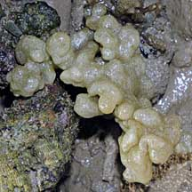 Pulau Biola, May 10 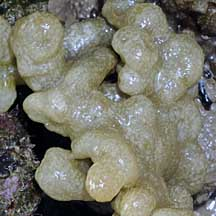 |
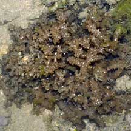 Sisters Island, Feb 06 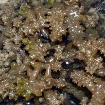 |
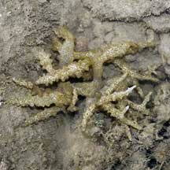 Pulau Semakau, Mar 05 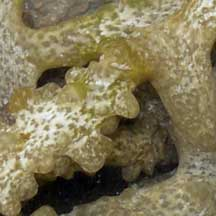 |
|
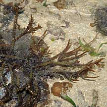 Pulau Semakau, May 08 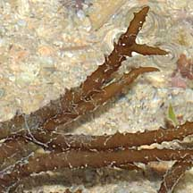 |
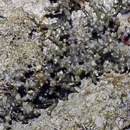 Pulau Semakau, Feb 08 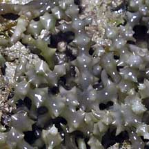 |
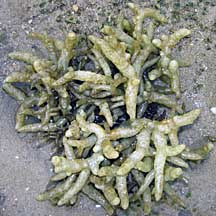 Terumbu Semakau, May10 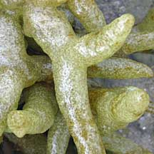 |
*Seaweed species are difficult to positively identify without microscopic examination.
On this website, they are grouped by external features for convenience of display.
| Bumpy finger seaweeds on Singapore shores |
On wildsingapore
flickr
|
| Other sightings on Singapore shores |
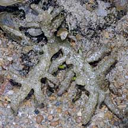 Pulau Salu, Jun 10 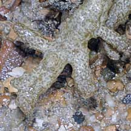 |
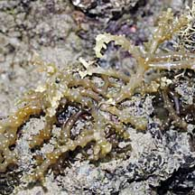 Terumbu Berkas, Jan 10 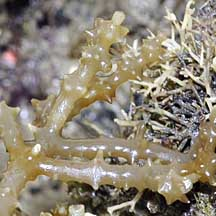 |
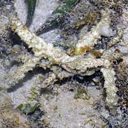 Pulau Berkas, May 10 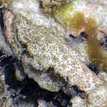 |
| Eucheuma
species recorded for Singapore Pham, M. N., H. T. W. Tan, S. Mitrovic & H. H. T. Yeo, 2011. A Checklist of the Algae of Singapore.
|
| Kappaphycus
species recorded for Singapore Pham, M. N., H. T. W. Tan, S. Mitrovic & H. H. T. Yeo, 2011. A Checklist of the Algae of Singapore.
|
Links
|